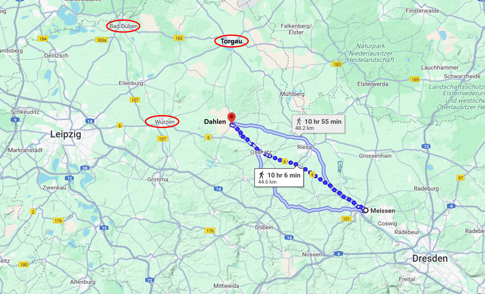
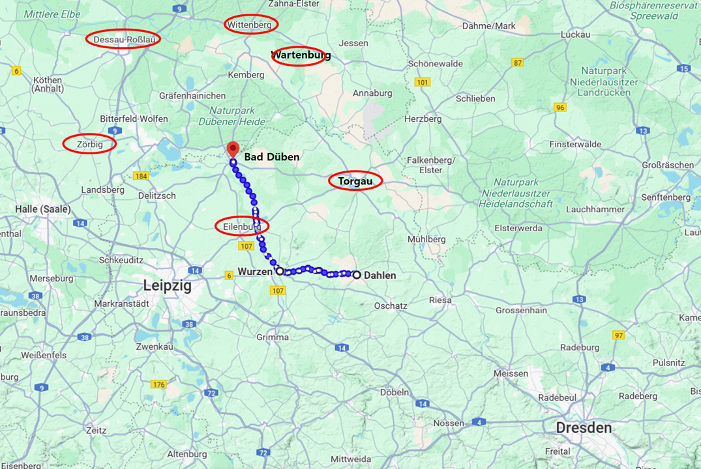
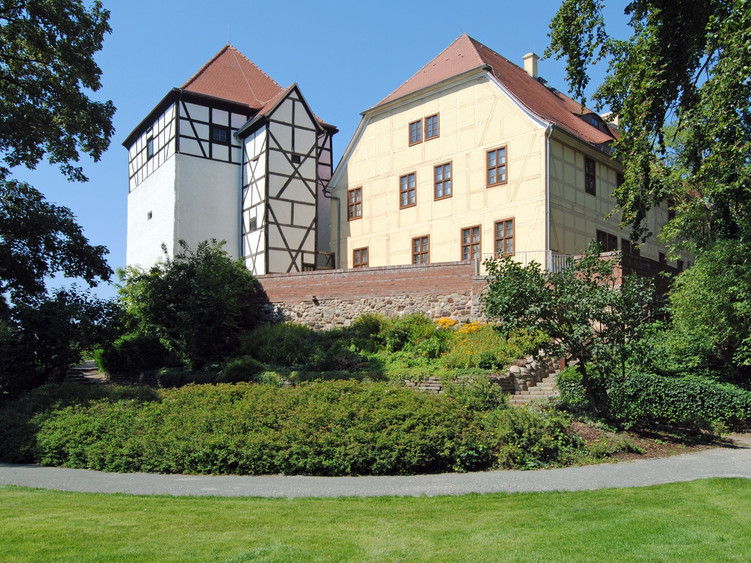
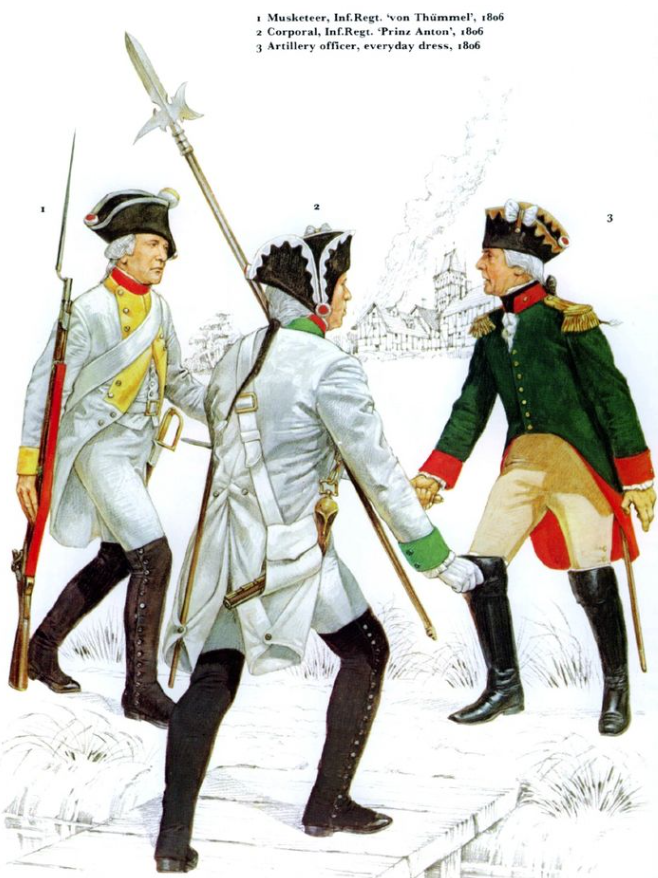

라이프치히로 가는 길 (22) - 나폴레옹 버프는 없다
게시: 2025-03-31T06:30:34+09:00
10월 7일 오전, 마이센으로 향하고 있던 나폴레옹에게 도착한 것은 전날 저녁 벤너비츠(Bennewitz)에서 보내온 네의 보고서였습니다. 그 보고서의 내용은 당장이라도 라이프치히에 도착할 것 같아 보이던 블뤼허가 일단 진격을 멈추고 멀더강의 우안에 멈춰 있다는 것이었습니다. 이는 먼저 엘베 강변의 프랑스군 요새인 비텐베르크(Wittenberg)의 포위 공격을 마무리하여 후방에 대한 걱정을 덜어낸 뒤에 움직이려는 것 같다는 네의 추측도 함께 적혀 있었습니다. 네는 결단성과 용기 측면에서는 타의 추종을 불허하는 용자였으나 결코 지략으로 뛰어난 사람은 아니었습니다. 그런 네의 추측성 보고를 나폴레옹이 100% 믿었다면 이상한 일이겠지만, 희한하게도 이때의 나폴레옹은 자기에게 유리한 보고만 골라서 믿는 경향이 있었습니다. 아무튼 나폴레옹은 네의 보고서를 읽고는 자신감이 부풀어 올랐고, 곧 연합군 3개 방면군을 모두 격파하고 다시 엘베강 동쪽으로 진격해야 할 텐데 엘베 강변의 주요 도하점인 드레스덴을 버린다는 것이 갑자기 아깝게 느껴졌던 모양입니다. 그는 오후 1시 마이센에 도착하자마자 피르나의 생시르에게 다음과 같은 내용의 편지를 써보냈습니다. "내 작전 계획은 내일 정도에 완성될 것인데, 난 이번에 적군과 결전을 벌일 생각이네. 내 작전은 토르가우를 중심으로 엘베강 좌우 양안에서 안정적인 통신망을 유지하며 전개될 거야. 그래서 드레스덴을 지키기로 마음을 바꿨네. 드레스덴으로 밀가루 수송선을 보내라고 명령했으니 빵을 굽고 참호를 파게. 드레스덴 시민들에게도 프랑스는 어떤 경우에도 드레스덴에서 철수하지 않을 것이며 5만의 병력으로 드레스덴을 지킬 것이라고 공표하게." 실제로 생시르의 병력은 제1군단과 제14군단, 약 2만5천 정도에 불과했으나 나폴레옹이 대외적으로 발표하는 병력을 2배로 뻥튀기하는 일은 일상다반사였으므로 별로 이상한 일은 아니었습니다. 문제는 당장 한 명의 병력이 아까운 마당에 2개 군단 2만5천의 병력이 별 전략적 가치도 없는 드레스덴에 묶이게 되었다는 점이었습니다. 이건 과거 '모든 문제는 승리를 거두면 저절로 해결되기 마련이다'라는 명언을 남겼던 젊은 시절의 나폴레옹이라면 절대 저지를 리 없는 실수였습니다. 아마도 나폴레옹의 마음 깊숙한 곳에서는 바이에른의 배신 소문이 사실일 수도 있으며 라인연방의 동맹국들이 흔들리는 와중에 드레스덴에서 물러난다면 작센군도 바이에른처럼 배신을 택할지도 모른다는 두려움이 있었던 것일까요? 하지만 드레스덴에 프랑스군이 주둔하건 말건 작센의 배신을 막지는 못했습니다. 나폴레옹은 오후에 마이센에서 출발하여 북서쪽으로 무려 33km 떨어진 오샤츠(Oschatz)에서 7일 밤을 보냈습니다. 여기는 달렌(Dahlen)에서 불과 10km 떨어진 곳이었는데, 아침 일찍 출발했던 드레스덴에서는 56km 떨어진 곳이었습니다. 당시 나폴레옹과 함께 이동한 것은 정예 중의 정예인 근위대 사단들 일부뿐이었긴 했지만, 여전히 대단한 행군 속도라는 점은 확실했습니다. 한 가지 좋은 점은 드레스덴에서 멀어질수록 식량 사정이 다소나마 좋아졌다는 것입니다. 그는 곧 이어 도착할 그의 병력들을 위해 오샤츠 일대의 작센 마을들에게 10만 명 분량의 빵을 구워놓을 것을 명령했습니다.

(마이센에서 달렌까지는 약 45km의 거리입니다. 오후부터 밤이 될 때까지 저 거리를 돌파하는 것은 쉬운 일이 아닙니다. 당시 나폴레옹은 고참근위대 제1사단과 신참근위대 일부 사단과 동행하고 있었습니다.

(이 행군 속도가 보여주듯이 근위대는 확실히 정예부대이긴 했으나, 다른 정규부대들은 모두 근위대를 싫어했습니다. 이는 단순히 질투 때문만은 아니었고, 평소 급여는 물론 군복, 배식 등에 있어서 정규부대에 비해 철저히 특헤를 받고 있었기 때문이었습니다. 특히 근위대는 나폴레옹이 최후의 예비대로서 아끼고 아껴서 실제 전투에 투입되는 일이 적었으므로, 많은 사상자를 내는 다른 부대에서는 더더욱 근위대를 미워했습니다. 이 그림에 묘사된 고참근위대(Vieille garde) 병사는 사병인데도 마치 장교처럼 허리에 군도를 차고 있는데, 이것 역시 근위대만의 특혜였습니다. 다만 이 군도 착용에 대해서는 정규부대 병사들도 별로 부러워 하지는 않았다고 합니다. 아무 쓸모도 없는데 괜히 무겁기만 하고 또 검열 받을 때 손질하기가 귀찮았기 때문이었습니다. 근위대도 실제 전투에 나갈 때는 저 쓸모 없는 군도는 떼어놓고 나갔습니다.) 나폴레옹이 당장 내일 오전에 도착할 달렌에서 결정해야 하는 것은 이제 엘베 강변의 토르가우(Torgau)로 가느냐 라이프치히 바로 동쪽인 뷔르첸(Wurzen)으로 가느냐 하는 것이었습니다. 뷔르첸으로 간다는 것은 블뤼허와 정면으로 격돌한다는 뜻이었고, 토르가우로 간다는 것은 나폴레옹을 피해 엘베강 너머로 후퇴하려는 블뤼허의 퇴로를 끊으려는 의도였습니다. 다음 날인 10월 8일 오전에 나폴레옹이 기다리던 네의 보고서가 들어왔는데, 이에 따르면 블뤼허는 아직 바트 뒤벤을 중심으로 멀더강 우안, 그러니까 멀더강 동쪽 강변에 전개되어 있었습니다. 그리고 네의 병력과 자신이 끌고온, 그리고 뒤이어 도착할 드레스덴의 주력군을 합하면 그 날 저녁까지 나폴레옹은 그 일대에 15만의 병력을 집결시킬 수 있었습니다. 당시 나폴레옹이 파악하고 있던 블뤼허의 병력은 6만 정도로서, 실제와 크게 다르지 않았습니다. 나폴레옹은 승리를 확신했습니다. 그는 당장 다음 날인 10월 9일 새벽까지 바트 뒤벤의 블뤼허를 들이치기로 하고, 그를 위해 토르가우가 아닌 뷔르첸으로 향하기로 합니다. 나폴레옹의 이때 계획은 단순했습니다. 아직 블뤼허가 고립되어 있을 때 재빨리 진격하여 블뤼허를 박살내면 패배한 블뤼허는 틀림없이 바르텐부르크의 다리를 건너 엘베강 너머로 후퇴할 것이니, 그때 그 다리를 끊어 블뤼허가 라이프치히에서 벌어질 슈바르첸베르크와의 결전에 참전하지 못하도록 하겠다는 것이었습니다. 아마 블뤼허가 패배하면 더 적은 병력을 가진 베르나도트는 겁을 먹고 역시 데사우의 다리를 넘어 후퇴할 것이니 역시 데사우의 다리를 끊으면 간단히 처리될 것이었습니다. 그 다음에 나폴레옹은 재빨리 남쪽으로 회군하여 뮈라가 막고 있던 슈바르첸베르크의 보헤미아 방면군을 라이프치히에서 박살내면 이 제6차 대불동맹전쟁을 끝낼 수 있었습니다.

(달렌(Dahlen)에서 바트 뒤벤(Bad Düben)까지는 약 48km의 거리로서, 강행군하면 하룻동안 돌파할 수 있는 거리이긴 했습니다. 당시 일반적인 보병 부대의 평균 이동 속도는 하루 20km가 안 되는 경우가 많았으나, 그건 식량의 현지 조달과 휴식 기간까지 포함한 몇 주 동안의 평균이고, 2~3일 정도 저런 식의 강행군 하는 사례는 영국군에게도 꽤 있었습니다. 현대적인 보병 부대가 완전군장 상태로 행군하는 거리는 하루 32km 정도입니다. 물론 길이 좋을 때 이야기지요.)

(바트 뒤벤의 뒤벤 황야 생태 박물관(Düben Heath Landscape Museum)인데, 소개 페이지를 보니 1813년 가을에 이 건물이 나폴레옹의 사령부로 쓰인 일이 있다고 되어 있네요. 이 반목조 건물은 완전히 새로 지어진 것이라서... 이 건물을 나폴레옹과 연결짓는 것은 다소 억지스러운 느낌이 들기는 합니다.) 문제는 병력수가 아니라 속도였습니다. 달렌에서 뷔르첸을 거쳐 바트 뒤벤까지 이르는 거리는 48km가 넘었습니다. 아무리 정예병인 근위대라고 해도 바로 전날에도 50km 넘게 행군했는데, 또 하루동안 48km나 행군한다는 것이 가능했을까요? 어쩌면 가능했겠으나 9일 새벽에 바트 뒤벤을 공격할 부대가 꼭 나폴레옹의 직속 부대일 필요는 없었고, 이미 바트 뒤벤 아래 아일렌부르크(Eilenburg) 남쪽에 주둔하고 있던 네의 제3군단과 제7군단, 제4군단 등을 동원하면 되는 일이었습니다. 당시 나폴레옹은 생시르의 병력을 제외하고는 드레스덴에서 부교병 대대의 장비마차들과 예비 포병대의 탄약마차까지 전병력을 모조리 끌고 오고 있었는데, 당연히 이들의 이동 속도는 더 느려서 나폴레옹의 이들에 대한 명령도 '10월 9일 아침 9시까지는 뷔르첸을 향해 출발할 것' 정도에 머물렀습니다. 다음 날인 10월 9일 아침 6시, 네의 병력들은 아일렌부르크를 향해 밀고 올라가기 시작했고 그 일대에서 마주친 러시아 기병대를 북쪽으로 쫓아냈습니다. 그런데 바쁜 추격길에 나선 네는 의아하게도 나폴레옹으로부터 제7군단의 검열을 실시하겠다는 통보를 받습니다. 레이니에의 제7군단은 프랑스 사단도 하나 있었지만 주로 작센 사단들로 구성된, 사실상 작센 군단이었습니다. 나폴레옹은 아마도 그로스베어런과 덴너비츠에서 연전연패했던 작센 병사들의 사기를 북돋아줄 필요가 있다고 느꼈나 봅니다. 1분 1초가 아까운 추격길에 그런 자리를 마련한 것을 보면 역시 나폴레옹은 작센이 흔들리는 것이 불안했나 봅니다. 사기 진작을 위해 검열을 하겠다니 그것도 좀 이상한 일입니다만, 사실 검열이라기보다는 나폴레옹의 얼굴을 직접 보고 나폴레옹의 연설을 직접 들으라는 배려였지요. 나폴레옹 버프처럼 확실한 효과를 내는 버프는 없었으니까요.

(이건 1809년 아벤스베르크(Abensberg) 전투에서 바이에른 및 뷔르템부르크 병사들에게 격려 연설을 하는 나폴레옹의 모습입니다. 아마 나폴레옹은 이런 광경을 기대했을 것입니다만, 때는 나폴레옹의 권력이 절정에 달했던 1809년이 아니라 1813년이었고, 결정적으로 연설 대상이 바이에른이 아니라 작센이었습니다.) 그러나 그 연설 분위기는 매우 실망스러웠습니다. 장교들과는 달리 불어를 알아듣지 못하는 독일 병사들에게 나폴레옹의 연설은 통역을 통해 전달되었는데, 평소엔 어학 천재이자 교양이 가득 했던 마복시 (Grand Ecuyer) 콜랭쿠르 장군이 통역을 했지만, 이때는 콜랭쿠르가 없었으므로 훨씬 실력이 떨어지는 사람이 통역을 하여 내용 전달에 문제가 많았습니다. 게다가 원래 나폴레옹의 연설은 좀 장황하고 감정이 과잉 부여된 경향이 있는 편이었지만, 이 날 연설은 평소보다 더 질질 늘어지고 장황한 편이었습니다. 작센 병사들의 시무룩하고 지루하다는 반응은 나폴레옹에게도 그대로 느껴졌고, 당황한 나폴레옹은 '더 이상 나와 함께 싸우기를 원치 않는 병사들은 즉각 전역시켜주겠다'라는 폭탄 선언까지 했습니다. 그러나 그 제안에 대해서는 병사들도 진정성을 느끼지 못했고, 반응은 여전히 심드렁했습니다. 심지어 제7군단 소속 프랑스 사단 병사들 반응도 시원찮았습니다. 검열을 마친 뒤, 나폴레옹은 무척이나 실망하고 언짢은 상태로 마차에 올라 바트 뒤벤을 향했습니다.

(당시 작센 병사들의 제복입니다. 작센군은 전통적으로 흰색 군복을 입었기 때문에 오스트리아군과 헷갈리는 경우가 가끔 있었습니다. 덕분에 1809년 바그람 전투에서 베르나도트가 지휘하던 작센군은 프랑스군의 오인 사격을 받고 적지 않은 피해를 입기도 했었습니다.) 러시아 기병대와 교전한 뒤에 이렇게 쓸모없던 검열을 하느라 시간낭비까지 했으니 바트 뒤벤의 블뤼허를 기습 공격하는 것은 물 건너 간 것일까요? 전쟁터에서는 어떤 상황에서도 끝까지 최선을 다해야 한다는 것이 이제 드러납니다. Source : The Life of Napoleon Bonaparte, by William Milligan Sloane Napoleon and the Struggle for Germany, by Leggiere, Michael V With Napoleon's Guns by Colonel Jean-Nicolas-Auguste Noël https://www.britannica.com/event/Napoleonic-Wars/Dispositions-for-the-autumn-campaign https://www.napoleon.org/en/history-of-the-two-empires/timelines/1813-and-the-lead-up-to-the-battle-of-leipzig/ http://www.historyofwar.org/articles/campaign_leipzig.html https://www.leipzig.travel/en/then/landscape-museum-of-the-Dueben-Heath%2C-Dueben-Castle https://www.pinterest.com/pin/708261478882072418/ https://en.wikipedia.org/wiki/Battle_of_Abensberg https://en.wikipedia.org/wiki/Old_Guard_%28France%29